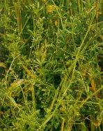
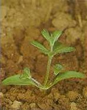

RAGADÓS GALAJ
GALIUM APARINE L. IGALAP
ÉLETFORMA. T2
TERMÉS: Termése hasadó, gömbölyded, kissé lapított,
két résztermésre hulló. Szürkéssárga vagy szürkészöld, világosabb bibircseken
ülő merev, horgas, fehéres sertékkel. Átmérője 2,0-3,2 mm. Ezermagtömeg 5,4- 8,0
g. Egy növény 360-1000 résztermést érlel. Ősszel vagy tavasszal csírázik. CSÍRANÖVÉNY: Sziklevelei nagyok, hosszú oválisak, nyelesek. A
levéllemez a csúcsi részen a középérnél enyhén kicsípett. Első és későbbi
lomblevelei örvösen jelennek meg, ék alakú alapból indulnak ki, lándzsásak.
KIFEJLETT NÖVÉNY: Egyéves, fekvő vagy kapaszkodó
szárú, 30-150 cm hosszú, négyélű, lefelé álló tüskékkel és a csomókon horgas
szőrökkel fedett. Rendszerint dúsan ágas. Levelei örvökben 6-9-esével állnak a
szárcsomókon: A levéllemezek válla ék alakú, visszás-lándzsás, csúcs felé
szélesedő, tüske hegyű. A levéllemez színe ritka serteszőrökkel fedett vagy
kopasz, fonóka visszafelé álló tüskefogakkal borított. A virágzatok a
levélhónaljból induló nyélen találhatók, kevés virágúak, fehér színűek.
Május júniusban virágzik.
ELTERJEDÉSE: Egész Európában, Észak- és
Nyugat-Ázsiában elterjedt. Az üde, jó vízgazdálkodású, tápanyagokban gazdag
humuszos vályog és agyagtalajokat kedveli.
 |